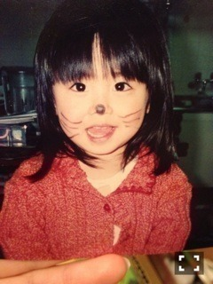

| 2014/02 17 Mon | 斎藤ちはる 17歳一日目(´>∀<｀)ゝ |
ちはるーむへようこそ☻！
本日、2月17日、斎藤ちはる、
17歳になりました！！
やっと華のセブンティーンです\( ˆoˆ )/
17歳って、
大人と子供のちょうど狭間だと思ってて、
子供から大人へと段々変わっていく1年なのかなーって考えてます！
だからこの1年で、
見た目も、心も大人っぽい人になりたい(o^^o)
そして、今年の目標は、
「キラキラした人間になる！！！！
」
セブンティーンって、なんか
キラキラしてて輝いてるイメージがあって☻
だから自分もそんなキラキラしてて
他のみんなまでも楽しませられるような
素敵な人間になりたいな♡
昔のあたし。
目が大きすぎて
おじいちゃんからずっと、
「ひとみちゃん」と呼ばれてた時代。
なぜひとみちゃん。笑(｡-_-｡)

猫ちゃんになりたかった時代。
多分ぱぱにいたずらされたのかな(｡-_-｡)
そして現在。
少しは大人っぽくなったかな？？
昔が全盛期なんて言わせませんよ！(｡-_-｡)笑
こんな感じで、成長してます！
もっと大人っぽくなって、
心も成長して、
たくさんの方に愛される人になります(* ˆωˆ *)断言
がんばる！！！
これからも応援宜しくお願いします
素敵な1年に。
ばいるんっ
るんるんっ
ちはるんっ
(´>∀<｀)ゝ